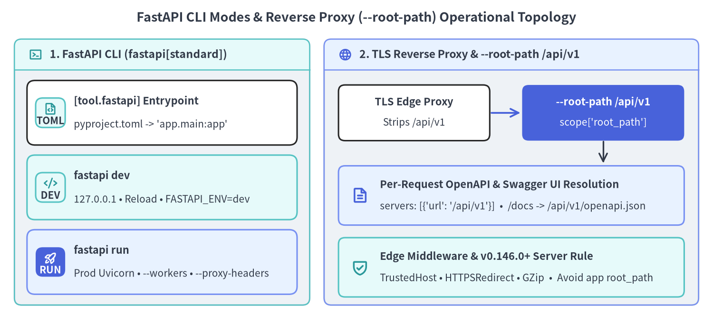
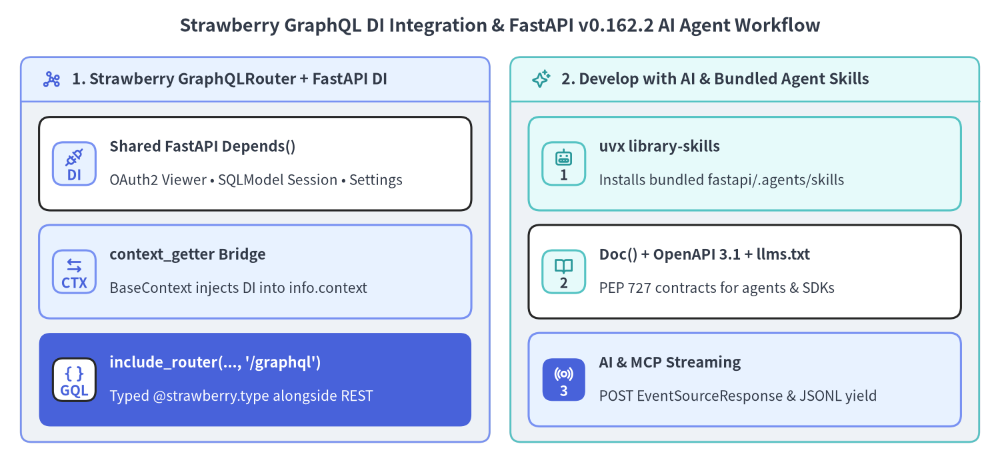

FastAPI CLI・リバースプロキシ・GraphQL・AI 駆動開発
FastAPI v0.162.2 は、開発から本番までのサーバー運用（fastapi dev / fastapi run と ASGI --root-path プロキシ連携）、Depends() を共有する Strawberry GraphQL サブルーター、そしてパッケージ同梱の AI エージェントスキル（uvx library-skills・PEP 727 Doc()・SSE/JSONL ストリーミング）を一貫した設計で統合します。

1. FastAPI CLI・リバースプロキシ（--root-path）・エッジミドルウェア
pip install "fastapi[standard]" を導入すると fastapi コマンド（fastapi.cli:main から fastapi-cli へ委譲）が有効になり、独自シェルスクリプトに頼ることなくローカル開発・本番 ASGI 起動・マネージドクラウドへのデプロイ（uv run fastapi deploy）を標準化できます。
[tool.fastapi] の宣言と fastapi dev vs fastapi run の使い分け
コマンド実行のたびにモジュールパスを指定する代わりに、pyproject.toml にアプリケーションのエントリポイントを 1 度だけ宣言します。
[tool.fastapi]
entrypoint = "my_app.main:app"
entrypoint を定義しておけば、fastapi dev と fastapi run がそれぞれの環境に最適化されたセキュリティ設定と並行実行オプションを自動適用します。
| 機能・挙動 | fastapi dev（ローカル開発モード） |
fastapi run（本番ランタイム） |
|---|---|---|
| 既定バインドアドレス | 127.0.0.1:8000（安全なローカルループバック限定） |
0.0.0.0:8000（コンテナ待受用・プロキシ背後で保護） |
| 自動リロード監視 | 有効（ファイル保存時に即座にワーカーを再起動） | 無効（ファイル監視オーバーヘッドなし） |
FASTAPI_ENV 環境変数 |
未設定時に FASTAPI_ENV="development" を自動設定 |
設定なし（app.frontend(check_dir="auto") がビルド成果物を検証） |
| スケール・プロキシ引数 | 単一リロードプロセス | --workers N, --proxy-headers, --root-path /api/v1 |
リバースプロキシ配下の --root-path と v0.146.0 での FastAPI(root_path=...) 非推奨化
マイクロサービスのゲートウェイ構成（Nginx・Traefik・Envoy・Cloud Load Balancing など）では、外部公開 URL https://api.example.com/api/v1/catalog の /api/v1 プレフィックスをプロキシ側で除去 し、内部コンテナへ /catalog として転送する構成が一般的です。このときアプリ側が外部プレフィックスを認識していないと、Swagger UI（/docs）が /api/v1/openapi.json ではなくルート直下の /openapi.json を取得しようとして 404 になります。
FastAPI v0.146.0 以降（v0.162.2 では FastAPIDeprecationWarning を送出）、Python コード内で FastAPI(root_path="/api/v1") を渡す方式は 非推奨（Deprecated） となりました。URL プレフィックスはアプリケーションコードではなくデプロイトポロジの責務であるため、CLI から ASGI サーバー側へ指定します。
fastapi run --proxy-headers --root-path /api/v1
FastAPI.setup() 内部では、/openapi.json・/docs・/redoc への各リクエスト時に req.scope.get("root_path", "") を動的に参照します。
- キャッシュ汚染の完全防止:
app.openapi()はベースとなる OpenAPI3.1.0スキーマ辞書を 1 度だけ生成してキャッシュし、/openapi.jsonルートはリクエストごとに辞書を浅くコピーした上でserversの先頭に{"url": "/api/v1"}を追加します（root_path_in_servers=Falseで無効化可能）。これにより特定のroot_pathが他リクエストのキャッシュを書き換えることはありません。 - Docs UI パスの自動解決: Swagger UI（
/docs）、OAuth2 リダイレクト（/docs/oauth2-redirect）、ReDoc（/redoc）のすべてがopenapi_urlに自動でroot_path（/api/v1/openapi.json）を付与します。
標準搭載のエッジ防御・圧縮ミドルウェア
独自の 純粋 ASGI ミドルウェア に加え、fastapi.middleware は本番エッジで頻用される標準ミドルウェアを提供しています。
TrustedHostMiddleware(allowed_hosts=[...]): 未許可のHostヘッダーを400 Bad Requestで即座に拒否し、HTTP Host ヘッダーインジェクション攻撃を防御します。HTTPSRedirectMiddleware: 上流ロードバランサーで TLS リダイレクトを行わない構成において、http://からhttps://（およびws://からwss://）への307 Temporary Redirectを強制します。GZipMiddleware(minimum_size=1000, compresslevel=5): クライアントがAccept-Encoding: gzipを送信し、かつレスポンスサイズがminimum_sizeバイト以上の場合にペイロードを自動圧縮します。
import warnings
from fastapi import FastAPI, Request
from fastapi.exceptions import FastAPIDeprecationWarning
from fastapi.middleware.gzip import GZipMiddleware
from fastapi.middleware.httpsredirect import HTTPSRedirectMiddleware
from fastapi.middleware.trustedhost import TrustedHostMiddleware
from fastapi.testclient import TestClient
def build_edge_app(*, enforce_https: bool = False) -> FastAPI:
app = FastAPI(title="Edge Catalog API", version="1.0.0")
app.add_middleware(
TrustedHostMiddleware,
allowed_hosts=["api.example.com", "testserver"],
)
app.add_middleware(GZipMiddleware, minimum_size=500, compresslevel=5)
if enforce_https:
app.add_middleware(HTTPSRedirectMiddleware)
@app.get("/catalog")
def read_catalog(request: Request) -> dict[str, object]:
return {
"root_path": request.scope.get("root_path", ""),
"items": [f"sku-{idx:03d}-enterprise-edition" for idx in range(40)],
}
return app
def test_root_path_openapi_servers_and_edge_middlewares() -> None:
app = build_edge_app()
# Simulate `fastapi run --root-path /api/v1` via ASGI scope root_path
with TestClient(app, root_path="/api/v1") as prefixed_client:
res = prefixed_client.get("/catalog", headers={"Accept-Encoding": "gzip"})
assert res.status_code == 200
assert res.headers.get("content-encoding") == "gzip"
assert res.json()["root_path"] == "/api/v1"
schema = prefixed_client.get("/openapi.json").json()
assert schema["servers"] == [{"url": "/api/v1"}]
assert "/api/v1/openapi.json" in prefixed_client.get("/docs").text
# Unprefixed requests remain clean; spoofed Host headers return 400
with TestClient(app) as direct_client:
assert "servers" not in direct_client.get("/openapi.json").json()
bad_host = direct_client.get("/catalog", headers={"Host": "evil.attacker.tld"})
assert bad_host.status_code == 400
# HTTPSRedirectMiddleware redirects plain HTTP -> HTTPS (307)
https_app = build_edge_app(enforce_https=True)
with TestClient(https_app, base_url="http://api.example.com") as http_client:
redir = http_client.get("/catalog", follow_redirects=False)
assert redir.status_code == 307
assert redir.headers["location"] == "https://api.example.com/catalog"
# Passing root_path to FastAPI(...) emits FastAPIDeprecationWarning
with warnings.catch_warnings(record=True) as caught:
warnings.simplefilter("always")
FastAPI(root_path="/legacy")
assert any(issubclass(w.category, FastAPIDeprecationWarning) for w in caught)
2. Strawberry GraphQL 統合と AI ネイティブ開発ワークフロー
FastAPI の型アノテーション中心の設計は、Strawberry による型安全な GraphQL クエリグラフと、最新の AI コーディングエージェント / MCP ツール基盤 の双方へ自然に拡張できます。

Strawberry（GraphQLRouter）のマウントと Depends() コンテキスト共有
深くネストした関連データを 1 往復で柔軟に取得したい画面では GraphQL が威力を発揮する一方、HTTP キャッシュ・OpenAPI からの型付き SDK 生成・ファイルアップロード・明確なステータスコード制御では標準的な REST エンドポイントが優位です。別プロセスで GraphQL サーバーを立てる代わりに、Strawberry（strawberry-graphql）の GraphQLRouter を用いれば単一の FastAPI アプリ内に APIRouter として統合できます。
- 型ヒントの完全な親和性:
@strawberry.typeは標準のdataclassesや Pydantic モデルと同じ Python 型アノテーションでスキーマを定義します。 context_getterによる DI 統合:strawberry.fastapi.BaseContextを継承しcontext_getter関数を渡すことで、REST 側と 完全に同一の FastAPIDepends()依存関係（OAuth2 認証ユーザー、SQLModelSessionDep、SettingsDep）をinfo.contextへ注入でき、pytestのapp.dependency_overridesも REST と/graphqlの双方へ一括適用されます。
FastAPI v0.162.2 における AI 駆動開発（library-skills・Doc()・MCP SSE）
事前学習済み LLM は古い学習コーパスに引きずられ、非推奨となった ORJSONResponse・RootModel・素の Depends() デフォルト引数・旧式の @app.on_event("startup") を出力しがちです。これを防ぐため、FastAPI v0.162.2 は バージョン完全一致の公式 AI エージェントスキル を fastapi パッケージ内部（fastapi/.agents/skills/fastapi/SKILL.md と references/）に直接同梱しています。
uvx library-skillsによるスキル自動同期: プロジェクト内でuvx library-skillsを実行すると、インストール済みのfastapiバージョンに同梱された.agents/skills/fastapi/ルールがワークスペースへ展開され、コーディングエージェントがAnnotated[..., Depends()]・app.frontend()・ネイティブ OpenTelemetry・EventSourceResponse・SQLModel・Asyncer（asyncify/syncify）の最新規約を正確に遵守します。- 機械可読な契約情報（
PEP 727 Doc()・OpenAPI3.1.0・llms.txt）:Annotated[str, Doc("...")]で記述した引数ドキュメントは/openapi.json（OpenAPI3.1.0JSON Schema）へ出力され、エージェントのツール定義や SDK 生成器、llms.txtドキュメント索引がハルシネーションなく正確なパラメータ型と制約を参照できます。 - AI & Model Context Protocol（MCP）ストリーミング: FastAPI ネイティブの SSE（
EventSourceResponse）および JSON Lines はGETだけでなくPOSTメソッドにも標準対応 しており、LLM トークン配信や MCP の HTTP+SSE トランスポートをyieldのみで簡潔に実装できます。
from collections.abc import AsyncIterable
from typing import Annotated
from annotated_doc import Doc
from fastapi import Depends, FastAPI
from fastapi.sse import EventSourceResponse, ServerSentEvent
from fastapi.testclient import TestClient
from pydantic import BaseModel
import strawberry
from strawberry.fastapi import BaseContext, GraphQLRouter
def get_current_viewer() -> str:
return "alice@corp.internal"
ViewerDep = Annotated[str, Depends(get_current_viewer)]
class GraphQLContext(BaseContext):
def __init__(self, viewer: str) -> None:
super().__init__()
self.viewer = viewer
async def get_graphql_context(viewer: ViewerDep) -> GraphQLContext:
return GraphQLContext(viewer=viewer)
@strawberry.type
class BookNode:
title: str
author: str
requested_by: str
@strawberry.type
class QueryRoot:
@strawberry.field
def books(self, info: strawberry.Info[GraphQLContext, None]) -> list[BookNode]:
return [
BookNode(
title="FastAPI Architecture",
author="Sebastián Ramírez",
requested_by=info.context.viewer,
)
]
graphql_schema = strawberry.Schema(query=QueryRoot)
graphql_router = GraphQLRouter(graphql_schema, context_getter=get_graphql_context)
app = FastAPI(title="Hybrid REST + GraphQL + AI Gateway")
app.include_router(graphql_router, prefix="/graphql", tags=["graphql"])
class AgentPrompt(BaseModel):
prompt: Annotated[str, Doc("Natural-language instruction sent by the AI agent.")]
@app.post("/ai/stream", response_class=EventSourceResponse)
async def stream_agent_steps(
body: AgentPrompt,
viewer: ViewerDep,
) -> AsyncIterable[ServerSentEvent]:
yield ServerSentEvent(
event="agent.step",
id="1",
data={"viewer": viewer, "accepted_prompt": body.prompt},
)
def test_strawberry_graphql_di_and_ai_sse() -> None:
app.dependency_overrides[get_current_viewer] = lambda: "bot@ci.local"
try:
with TestClient(app) as client:
gql_res = client.post(
"/graphql",
json={"query": "{ books { title requestedBy } }"},
)
assert gql_res.status_code == 200
assert gql_res.json() == {
"data": {
"books": [
{
"title": "FastAPI Architecture",
"requestedBy": "bot@ci.local",
}
]
}
}
sse_res = client.post("/ai/stream", json={"prompt": "Summarize schema"})
assert sse_res.status_code == 200
assert sse_res.headers["content-type"].startswith("text/event-stream")
assert "event: agent.step" in sse_res.text
finally:
app.dependency_overrides.clear()
型安全な環境変数管理と SQLModel のテスト設計については pydantic-settings 設定管理と SQL DB を振り返るか、ガイド概要と全体マップ へ戻って FastAPI v0.162.2 の全体アーキテクチャを参照してください。